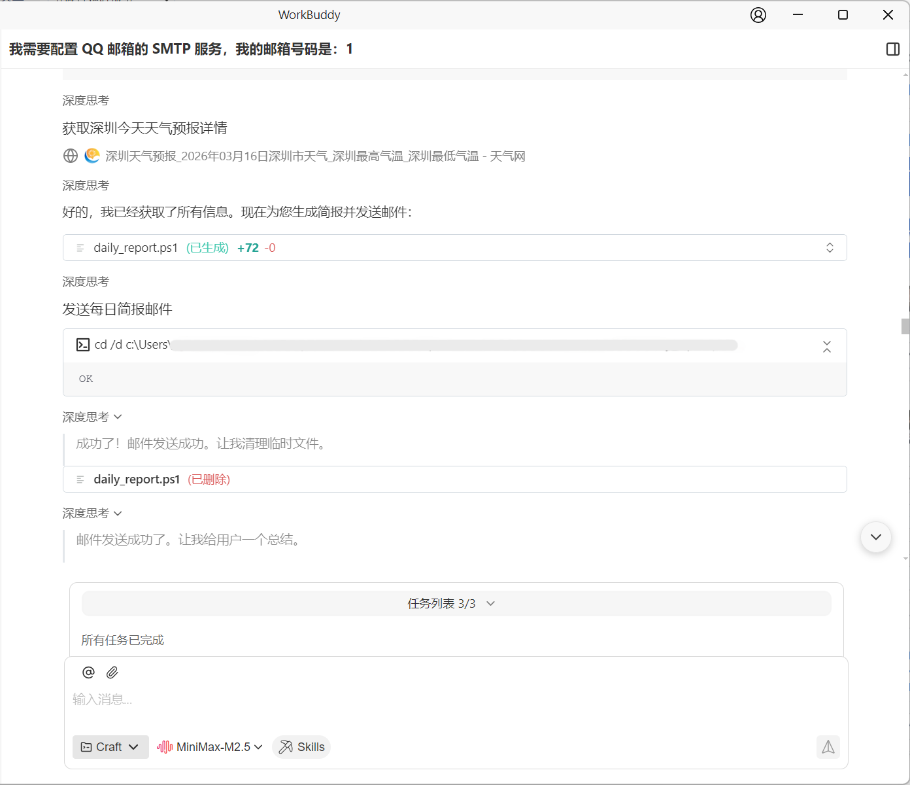
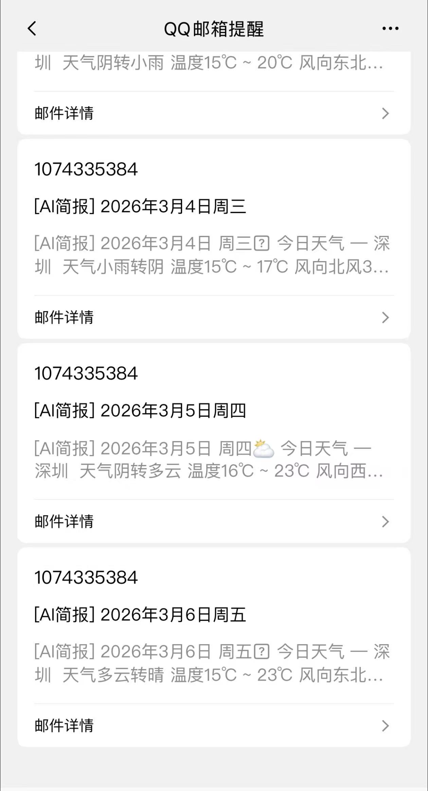
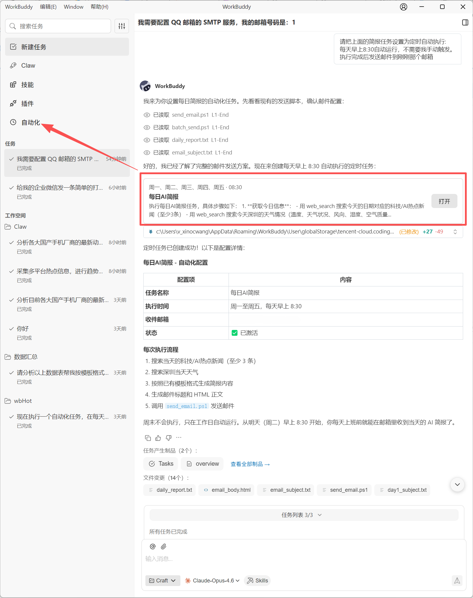
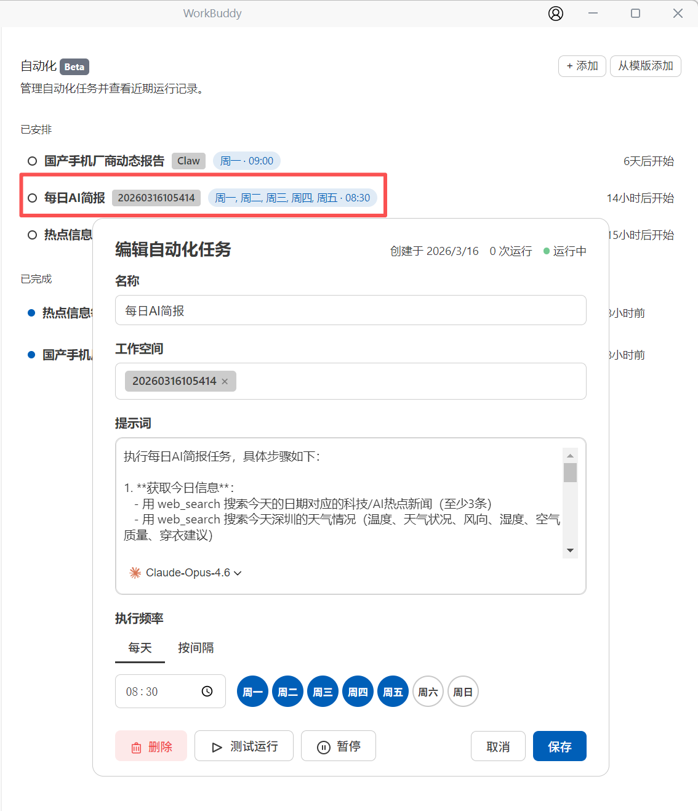

实践五：每日自动推送资讯简报
一、文档说明
本文介绍如何使用 WorkBuddy 配置资讯简报的发送能力，并创建每日自动推送任务。适用于希望固定时间接收天气、新闻、行业动态与个人待办摘要的场景。
二、连接 QQ 邮箱
在发送邮件之前，需要先通过连接器将 QQ 邮箱与 WorkBuddy 对接。
👉 请参考 连接器指南 - 连接 QQ 邮箱 完成配置。
三、手动触发第一条简报
建议先手动执行一次，确认消息内容、发送流程与邮箱接收是否正常。
示例指令：
请生成今天的资讯简报，包含本地天气、
AI行业动态、重点新闻和我的任务摘要，并发送到我的
执行过程中，WorkBuddy 通常会完成搜索、整理、生成和发送等步骤，整体耗时约 2 到 3 分钟。


四、设置每日定时发送
手动跑通后，可继续创建自动化任务，让简报按固定时间自动发送。
示例指令：
请创建一个自动化任务，每天早上
8点30分为我生成资讯简报并发送到
创建成功后，可在左侧边栏的自动化目录中统一管理所有定时任务。


五、个性化调整
简报内容可以通过自然语言持续调整，常见方向包括：
- 新增数据源：增加微博、知乎等平台的热榜内容。
- 调整资讯范围：仅保留
A股、财经或AI新闻。 - 调整写作风格：改为更正式、轻松或摘要式的表达。
- 限制发送日期：只在工作日执行，法定节假日不发送。
示例指令：
请把简报改成只发送工作日版本，保留财经资讯和
AI新闻，并将整体语气调整为简洁专业。
六、使用建议
- 先验证发送链路：务必先手动发送成功，再开启自动化。
- 控制内容长度：简报内容越聚焦，越适合长期阅读。
- 逐步细化规则：建议先跑通基础版本，再补充节假日、频道来源等个性化要求。